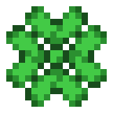

Absorption
This status effect adds more hearts to the player's healthbar but it will disappear after a period of time.
Bad Omen
This status effect will trigger a raid of Pillagers, if the player enters the village.
Blindness
This status effect will reduce the player's field of vision.
Conduit Power
This status effect combines Night Vision, Haste and Water Breathing.
Dolphin's Grace
This status effect will boost the player's swimming speed.
Fire Resistance
This status effect will make the player immune to fire.
Glowing
This status effect will outline the affected entity.
Haste

This status effect will allow the player to mine faster.
Health Boost
This status effect increase the player's maximum health.
Hunger
This status effect will make the player more hungry.
Instant Damage
This status effect instantly hurts the player.
Instant Health
This status effect instantly heals the player.
Invisibilty
This status effect makes the player disappear.
Jump Boost
This status effect lets the player jump higher than normal.
Levitation
This status effect makes the player float.
Luck
This status effect increases the possibility of finding treasure by fishing.
Mining Fatigue

This status effect reduces the mining and attack speed.
Nausea

This status effect makes the player disoriented.
Night Vision

This status effect allows the player to see in the dark.
Poison

This status effect deals damage to the player over time until the player's health is at half a heart.
Regeneration

This status effect regenerates the player's health over time.
Resistance

This status effect will let the player take less damage.
Slow Falling

This status effect slows down the player's falling speed.
Slowness

This status effect slows down the player's movement speed.
Strength

This status effect increases the player's strength.
Swiftness

This status effect speeds up the player's movement speed.
Water Breathing

This status effect will allow the player to breath underwater
Weakness

This status effect decreases the player's strength.
Wither

This status effect deals damage to the player's health until the player has died.
How to rid these status effects

All you have to do is drink some milk and the status effect is gone!